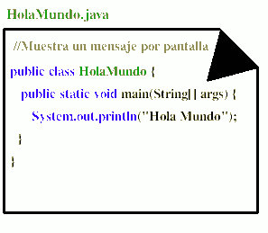
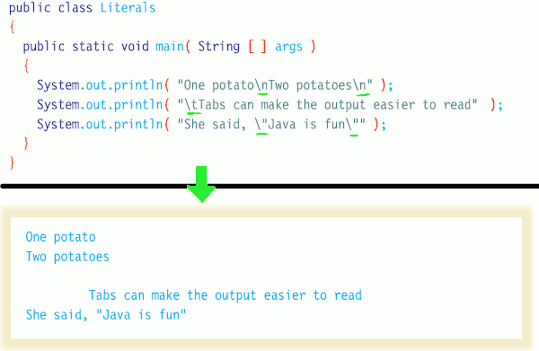
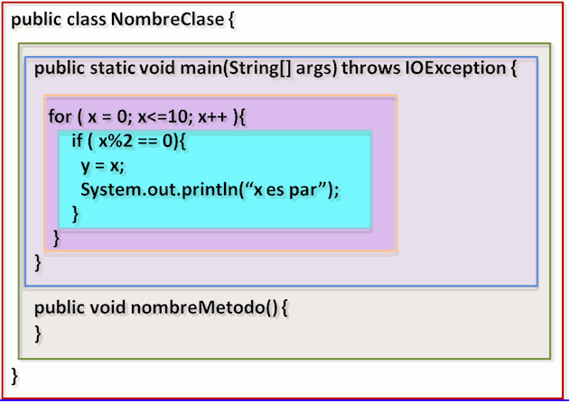
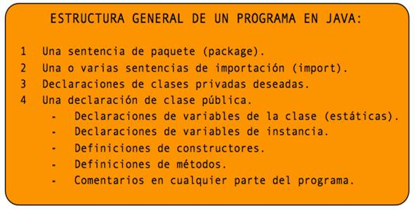

<!doctype html>
<html lang="ca">
<head>
<link rel="stylesheet" type="text/css" href="base.css" />
<link rel="stylesheet" type="text/css" href="content.css" />
<link rel="stylesheet" type="text/css" href="nav.css" />
<meta http-equiv="content-type" content="text/html;  charset=utf-8" />
<title>1. Estructura d'un programa Java | tema2 </title>
<link rel="shortcut icon" href="favicon.ico" type="image/x-icon" />
<meta name="author" content="Fran Jaraba" />
<link rel="license" type="text/html" href="http://creativecommons.org/licenses/by-sa/4.0/" />
<meta name="generator" content="eXeLearning 2.8.1 - exelearning.net" />
<!--[if lt IE 9]><script type="text/javascript" src="exe_html5.js"></script><![endif]-->
<script type="text/javascript" src="exe_jquery.js"></script>
<script type="text/javascript" src="common_i18n.js"></script>
<script type="text/javascript" src="common.js"></script>
<meta name="viewport" content="width=device-width, initial-scale=1" />
</head>
<body class="exe-web-site" id="exe-node-4"><script type="text/javascript">document.body.className+=" js"</script>
<div id="content">
<p id="skipNav"><a href="#main" class="sr-av">Omet navegació</a></p>
<header id="header" ><div id="headerContent">tema2</div></header>
<nav id="siteNav">
<ul>
   <li><a href="index.html" class="daddy main-node">Programació</a></li>
   <li><a href="estructura_de_un_programa_datos_e__s.html" class="daddy">Estructura de un programa. Datos. E / S</a>
   <ul class="other-section">
      <li><a href="1_estructura_de_un_programa.html" class="no-ch">1. Estructura de un programa</a></li>
      <li><a href="2_tipos_de_datos_variables_y_constantes.html" class="daddy">2. Tipos de datos, variables y constantes</a>
      <ul class="other-section">
         <li><a href="21_variables.html" class="no-ch">2.1. Variables</a></li>
         <li><a href="22_constantes.html" class="no-ch">2.2. Constantes</a></li>
         <li><a href="23_conversin_de_tipos.html" class="no-ch">2.3. Conversión de tipos</a></li>
         <li><a href="24_variables_y_objetos_valores_primitivos_y_referencia.html" class="no-ch">2.4. Variables y objetos. Valores Primitivos y Referencia</a></li>
         <li><a href="25_clases_de_envoltura.html" class="no-ch">2.5. Clases de envoltura</a></li>
      </ul>
      </li>
      <li><a href="3_expresiones_y_operadores.html" class="no-ch">3. Expresiones y operadores</a></li>
      <li><a href="4_clases_y_objetos.html" class="daddy">4. Clases y Objetos</a>
      <ul class="other-section">
         <li><a href="41_la_clase_principal_y_el_mtodo_main.html" class="no-ch">4.1. La clase principal y el método main</a></li>
         <li><a href="42_librera_de_clases_java.html" class="no-ch">4.2. Librería de clases Java</a></li>
      </ul>
      </li>
      <li><a href="5_entrada__salida.html" class="no-ch">5. Entrada / Salida</a></li>
      <li><a href="6_cadenas.html" class="no-ch">6. Cadenas</a></li>
      <li><a href="7_expresiones_regulares_en_java.html" class="no-ch">7. Expresiones regulares en Java</a></li>
      <li><a href="8_otras_clases_de_inters.html" class="no-ch">8. Otras clases de interés</a></li>
   </ul>
   </li>
   <li class="current-page-parent"><a href="estructura_dun_programa_dades_e__s.html" class="current-page-parent daddy">Estructura d'un Programa. Dades. E / S</a>
   <ul>
      <li id="active"><a href="1_estructura_dun_programa_java.html" class="active no-ch">1. Estructura d'un programa Java</a></li>
      <li><a href="2_tipus_de_dades_variables_i_constants.html" class="daddy">2. Tipus de dades, variables i constants</a>
      <ul class="other-section">
         <li><a href="21_variables0.html" class="no-ch">2.1. Variables</a></li>
         <li><a href="22_constants.html" class="no-ch">2.2. Constants</a></li>
         <li><a href="23_conversi_de_tipus.html" class="no-ch">2.3. Conversió de tipus</a></li>
         <li><a href="24_variables_i_objectes_valors_primitius_i_referncia.html" class="no-ch">2.4. Variables i objectes. Valors Primitius i Referència</a></li>
         <li><a href="25_classes_denvoltura.html" class="no-ch">2.5. Classes d'envoltura</a></li>
      </ul>
      </li>
      <li><a href="3_expressions_i_operadors.html" class="no-ch">3. Expressions i operadors</a></li>
      <li><a href="4_classes_i_objectes.html" class="daddy">4. Classes i Objectes</a>
      <ul class="other-section">
         <li><a href="41_la_classe_principal_i_el_mtode_main.html" class="no-ch">4.1. La classe principal i el métode main</a></li>
         <li><a href="42_llibreria_de_classes_java.html" class="no-ch">4.2. Llibreria de classes Java</a></li>
      </ul>
      </li>
      <li><a href="5_entrada__eixida.html" class="no-ch">5. Entrada / Eixida</a></li>
      <li><a href="6_cadenes.html" class="no-ch">6. Cadenes</a></li>
      <li><a href="7_expressions_regulars_a_java.html" class="no-ch">7. Expressions regulars a Java</a></li>
      <li><a href="8_altres_classes_dinters.html" class="no-ch">8. Altres classes d'interès</a></li>
   </ul>
   </li>
   <li><a href="ejercicios.html" class="no-ch">Ejercicios</a></li>
</ul>
</nav>
<div id='topPagination'>
<nav class="pagination noprt">
<a href="estructura_dun_programa_dades_e__s.html" class="prev"><span><span>&laquo; </span>Anterior</span></a> <span class="sep">| </span><a href="2_tipus_de_dades_variables_i_constants.html" class="next"><span>Següent<span> &raquo;</span></span></a>
</nav>
</div>
<div id="main-wrapper">
<section id="main">
<header id="nodeDecoration"><h1 id="nodeTitle">1. Estructura d'un programa Java</h1></header>
<article class="iDevice_wrapper textIdevice" id="id17">
<div class="iDevice emphasis0" >
<div id="ta17_121_2" class="block iDevice_content">
<div class="exe-text"><p>Un arxiu de <strong>codi font</strong> Java ha de tindre l'extensió <strong><span style="color: #0000ff;">.java</span></strong> i els arxius amb codi objecte tindran l'extensió  <span style="color: #0000ff;"><strong> .class</strong></span>. El <span style="text-decoration: underline;">nom de l'arxiu font ha de coincidir amb el nom de la classe pública que conté</span>.</p>
<p style="text-align: center;"></p>
<p>Un <strong>programa</strong> descriu com un ordinador ha d'interpretar les ordres del programador perquè execute i realitze les instruccions donades tal com estan escrites. Un programador utilitza els elements que ofereix un llenguatge de programació per a dissenyar programes que resolguen problemes concrets o realitzen accions ben definides. El següent programa Java mostra un missatge en la consola amb el text “Hola Món”.</p>
<pre><span style="font-size: 10pt; color: #008000;"><span style="text-decoration: underline;"><span style="color: #993366; text-decoration: underline;">HolaMon.java</span></span><br />/*</span><br /><span style="font-size: 10pt; color: #008000;">* Aquest programa escriu el text "Hola Món" en la consola</span><br /><span style="font-size: 10pt; color: #008000;">* utilitzant el mètode System.out.println()</span><br /><span style="font-size: 10pt; color: #008000;">*/</span><br /><span style="font-size: 10pt;"><span style="color: #0000ff;">public</span> <span style="color: #0000ff;">class</span> HolaMon {</span><br /><span style="font-size: 10pt;"><span style="color: #0000ff;">    public static void</span> main (<span style="color: #0000ff;">String</span>[] args) {</span><br /><span style="font-size: 10pt;"><span style="color: #0000ff;">        System.out.println</span>("Hola Món");</span><br /><span style="font-size: 10pt;">    }</span><br /><span style="font-size: 10pt;">}</span></pre>
<p>En un programa Java podem trobar els següents elements:</p>
<ul>
<li><span style="color: #0000ff;"><strong>Comentaris</strong></span>: existeixen tres tipus de comentaris.
<ul>
<li><strong>Comentari de bloc</strong>. Comença per <strong><span style="color: #0000ff;"> /*</span></strong>  i finalitza per  <span style="color: #0000ff;">*/</span>. El compilador ignora tot el text contingut  dins del comentari.</li>
<li><strong>Comentari de documentació</strong>. Comença por<span style="color: #0000ff;"><strong> /**</strong></span> i termina por <strong><span style="color: #0000ff;">*/</span></strong>. Java disposa de la eina <strong>javadoc</strong> per a documentar automàticament els programes. En un comentari de documentació normalment s'indica l'autor i la versió del programari.</li>
<li><strong>Comentarii de línia</strong>. Comença amb  <span style="color: #0000ff;"><strong>//</strong></span>. El comentari comença amb aquests caràcters  finalitza al final de la línia.<br /><br /></li>
</ul>
</li>
<li><span style="color: #0000ff;"><strong>Identificadors</strong></span>: són nom que el programador fica a elements del programa (<em>variables, métodes, classes, etc</em>).  Existeixen regles molt estrictes sobre els noms que s'utilitzen com a identificadors de classes, de variables o de mètodes.<br />
<ul>
<li>Tot identificador ha de <strong>començar amb una lletra</strong> que pot estar <strong>seguida de més lletres o dígits o el caràcter "<span style="color: #0000ff;">_</span>" o "<span style="color: #0000ff;">$</span>"</strong>.</li>
<li>Un identificador <strong>no pot coincidir amb una paraula reservada</strong> de Java.</li>
<li>Es <strong>distingeix</strong> entre <strong>lletres majúscules i minúscules</strong>.</li>
<li>Existeixen  unes <strong>normes bàsiques</strong> per als identificadors que <strong>s'han de respectar</strong>.<br />
<ul>
<li>Els <strong>noms de variables i métodes</strong> <strong>començen amb minúscules</strong>. Si es tracta d'un nom compost cada paraula ha de començar amb majúscula i no s'ha d'utilitzar el guió baix per a separar les paraules: calcularSalari, setNom, getNom.</li>
<li> Els <strong>noms de classes</strong> començen sempre amb <strong>majúscules</strong>. En els noms compostos, cada paraula comença amb majúscula i no s'ha d'utilitzar el guió baix per a separar les paraules: HolaMon, PerimetreCircunferencia , Alumne,  Professor.</li>
<li> Els <strong>nombres de constants</strong> s'escriuen en majúscules. Per a noms compostos s'utilitza el guió baix per a separar les paraules. Per exemple: PI, MINIM, MAXIM o TOTAL_ELEMENTS.<br /><br /></li>
</ul>
</li>
</ul>
</li>
<li><span style="color: #0000ff;"><strong>Variables i valors</strong></span>: Un programa Java utilitza <strong>variables</strong> per a emmagatzemar valors, realitzar càlculs, modificar els valors emmagatzemats, mostrar-los per la consola, emmagatzemar-los en disc, enviar-los per la xarxa, etc. Una variable emmagatzema un únic valor. <br /><br />Una <strong>variable</strong> es <strong>defineix</strong> per un <strong>nomb</strong>, un <strong>tipus</strong> i el <strong>rang de valors</strong> que pot emmagatzemar.            <span style="color: #0000ff;">int</span> mesNaixement = 2;     <span style="color: #0000ff;">int</span> anyNaixement;    anyNaixement = 1000 * 2 + 4;<br />Si es <strong>declara una constant</strong>, cal utiltizar el delimitador <span style="color: #0000ff;"><strong>final</strong></span> i s'ha d'indicar el seu valor.      <span style="color: #0000ff;">final double</span> PI = 3.1415926536;<br /><br /></li>
<li><span style="color: #0000ff;"><strong>Literals</strong></span>: Es denomina literal a la manera en què s'escriuen els valors per a cadascun dels tipus primitius.
<ul>
<li><strong>Nombres Enters</strong>.  es pot escriurer en decimal, octal o en hexadecimal. Quan s'utiliza el sistema <strong>octal</strong> es necessari ficar el dígit <strong><span style="color: #0000ff;">0</span> davant del número</strong>. (025 --&gt; 21). Si s'utilitza el sistema <strong>hexadecimal</strong> cal ficar <span style="color: #0000ff;">0x</span> davant  del número (0xFF  -&gt;  255). Si s'utilitza el <strong>sistema binari</strong> cal ficar 0b davant del número (0b1001110 --&gt; 78;   0B1001110 --&gt; 78).</li>
<li><strong>Nombres reals</strong>. sempre han de portar  un punto decimal o un exponent. Per exemple, el número <strong>0.25</strong> es pot expressar també com <strong>2.5e-1</strong>. Els nombres reals se suposa que pertanyen al tipus <span style="color: #0000ff;">double</span>.</li>
<li><strong>Booleans</strong>. Els valors lògics nomes poden ser <span style="color: #0000ff;">true</span> i <span style="color: #0000ff;">false</span>. S'escriuen sempre en minúscules.</li>
<li><strong>Caràcters</strong>. representen un caràcter <strong>Unicode</strong>. S'escriuen sempre entre cometes simples, per exemple 'a', 'A', '0', '9'. En Java un caràcter es pot expressar per seu codi de la taula Unicode en octal o en hexadecimal.</li>
<li><strong>Textos</strong>. pertanyen a la classe <span style="color: #0000ff;"><strong>String</strong></span> i s'expresse com el text entre <strong>cometes dobles</strong>. Un text sempre ha d'aparèixe en <strong>una unica línia</strong>. Pera dividir un text en varies línies s'ha d'utilitzar l'<strong>operador<span style="color: #0000ff;"> +</span></strong> per a concatenar textos. Un text pot estar buit o contindre un o més caràcters. “Hola Mon”,  "".  El text "a" es diferent del caràcter 'a' de tipus <strong><span style="color: #0000ff;">char</span></strong>. dins dels literals de text existeixen alguns caràcters especials:<br />
<ul>
<li><span style="color: #008000;">\n</span>      -&gt;      nova línia</li>
<li><span style="color: #008000;"><strong>\s </strong></span>     -&gt;       espai</li>
<li><span style="color: #008000;">\t</span>       -&gt;      tabulador</li>
<li><span style="color: #008000;"><strong>\" </strong></span>     -&gt;       cometes dobles</li>
<li><strong><span style="color: #008000;">\'  </span></strong>     -&gt;      cometes simples</li>
<li><span style="color: #008000;"><strong>\\</strong></span>       -&gt;      backslash - barra invertida</li>
<li><span style="color: #008000;"><strong>\b </strong></span>     -&gt;      retrocés</li>
<li><span style="color: #008000;"><strong>\r </strong></span>      -&gt;      retorn de carro</li>
<li><span style="color: #008000;"><strong>\f</strong></span>      -&gt;      salto de pàgina<br /></li>
<li><strong>Literal nul</strong>: <span style="color: #0000ff;"><strong>null</strong></span> --&gt; paraula reservada que representa l'absència de valor</li>
</ul>
</li>
</ul>
</li>
<li><span style="color: #0000ff;"><strong>Operadors</strong></span>: cada tipus pot utilitzar determinats operadors per a realitzar operacions o càlculs.
<ul>
<li><strong>Nombres enters</strong>. el resultat sempre es un número enter. Amb el nombres enters es pot realitzar operacions unàries, additives, multiplicatives, de increment i decrement, relacionals, de igualtat i de assignació.</li>
<li><strong>Nombres reals</strong>. Amb els nombres reals s'apliquen els mateixos operadors que amb els nombres enters. Si es realitzen operacions unàries, additives o multiplicatives, el resultat es un nombre real. També es poden aplicar els operadors relacionals per a comparar dos nombres reals.</li>
<li><strong>Booleanos</strong>. Els operadors que s'apliquen als valors lògics són: <strong>negación</strong> (<strong><span style="color: #0000ff;"> !</span></strong> ) , <strong>Y lògic</strong> ( <span style="color: #0000ff;"><strong>&amp;&amp;</strong></span> ), <strong>O lògico</strong> (<span style="color: #0000ff;"><strong> ||</strong> </span>).<br /><br /></li>
</ul>
</li>
<li><span style="color: #0000ff;"><strong>Expressions</strong></span>:  permeten realitzar operacions entre valors utilitzant diferents operadors. Les expressions són <strong>útils</strong> per a <strong>representar les fórmules matemàtques</strong> que s'utilitzen per a realitzar càlculs. Tota l'expressió s'avalua a un valor. L'ordre dels càlculs depén   de l'ordre de <strong>prioritat</strong> dels operadors. Quan es desitja modificar l'ordre de prioritat dels operadors és necessari utilitzar parèntesi per a indicar l'ordre d'avaluació.<br /><br /></li>
<li><span style="color: #0000ff;"><strong>Expressions aritmètic-lògiques</strong></span>:   tornen un valor  <span style="color: #0000ff;"><strong>true</strong></span> o <strong><span style="color: #0000ff;">false</span></strong>.  Quan es desitja modificar l'ordre de prioritat dels operadors és necessari utilitzar parèntesi per a indicar l'ordre d'avaluació..<br /><br /></li>
<li><span style="color: #0000ff;"><strong>Conversió de tipus</strong></span>:  moltes vegades és necessari realitzar conversions de tipus quan s'avalua una expressió aritmètica. Per exemple, si després de realitzar el càlcul de conversió de graus Fahrenheit a Centígrads es vol emmagatzemar el resultat en la variable de tipus enter, és necessari fer una conversió de tipus.<br /><br />    centigrados = ((fahrenheit – 32.0) * 5.0)) / 9.0;<br /><br />Abans d'assignar el valor resultant a la variable temperatura, que emmagatzema un valor <strong>enter</strong>, és necessari convertir el valor de tipus <strong>double</strong> de la variable <span style="color: #0000ff;">centigrados</span> a <strong>int</strong>.<br /><br />    <span style="color: #0000ff;">int</span> temperatura = (<span style="color: #0000ff;">int</span>) centigrados;<br /><br /></li>
<li><span style="color: #0000ff;"><strong>Sentencies</strong></span>: són la <span style="text-decoration: underline;">unitat mínima d'execució d'un programa</span>. Un programa està format per un conjunt de sentencies que acaben resolent un problema. Al final de cada una de las sentencies trobarem un <strong>punt i coma</strong> (<span style="color: #0000ff;"><strong>;</strong></span>). Tenim els següents tipus de sentencies.
<ul>
<li>Sentencies de <strong>declaració</strong>:                            int valor = 2;</li>
<li>Sentencies d<strong>'assignació</strong>:                             valor = 2;</li>
<li>Sentencies d'<strong>increment o decrement</strong>:      valor++;</li>
<li><strong>Invocacions a mètodes</strong>:                             System.out.println("Hola Mundo");</li>
<li><strong>Creacions d'objectes</strong>:                                Circulo miCirculo = new Circulo(2,3);</li>
<li>Sentencies de <strong>control de fluix</strong>:                 if (valor&gt;1) { … }<br /><br /></li>
</ul>
</li>
<li><strong><span style="color: #0000ff;">Espais</span></strong>: es permet qualsevol quantitat d'espai en blanc entre identificadors, paraules clau de Java, operands, operadors i literals. Els caràcters d'espai en blanc són l'<span style="text-decoration: underline;">espai</span>, la <span style="text-decoration: underline;">tabulació</span>, la <span style="text-decoration: underline;">línia nova</span> i el <span style="text-decoration: underline;">retorn de carro</span>. L'ús d'espais en blanc fa que el programa siga més llegible. Es un <span style="text-decoration: underline;">bon estil de programació</span> <span style="text-decoration: underline;">envoltar identificadors, operands i operadors amb espais i saltar línies entre secciones lògiques del programa</span>.<br /><br /></li>
<li><span style="color: #0000ff;"><strong>Blocs</strong></span>: conjunt de sentencies les quals estan delimitats per <strong>claus</strong>. Un bloc pot constar de 0, 1 o més sentencies. Comença amb una clau esquerra "<span style="color: #0000ff;"><strong>{</strong></span>" i termina amb una clau dreta "<span style="color: #0000ff;"><strong>}</strong></span>". Els blocs <strong>són necessaris</strong> para las definicions de classes i mètodes i es poden utilitzar en qualsevol altre lloc del programa on una declaració siga legal. Niar bloques dins de bloques es perfectament legal.<br /><br /><br /></li>
<li>Les <strong><span style="color: #0000ff;">paraules reservades de Java</span></strong>: en tots els llenguatges de programació existeixen paraules amb un significat especial. Aquestes paraules són reservades i no es poden utilitzar com a noms de variables.<br />
<table style="width: 100%;" border="1">
<tbody>
<tr>
<td style="text-align: center;"><span style="color: #0000ff;">abstract</span></td>
<td style="text-align: center;" align="center"><span style="color: #0000ff;">continue</span></td>
<td style="text-align: center;" align="right"><span style="color: #0000ff;">for</span></td>
<td style="text-align: center;" align="right"><span style="color: #0000ff;">new</span></td>
<td style="text-align: center;" align="right"><span style="color: #0000ff;">switch</span></td>
</tr>
<tr>
<td style="text-align: center;"><span style="color: #0000ff;">assert</span></td>
<td style="text-align: center;" align="center"><span style="color: #0000ff;">default</span></td>
<td style="text-align: center;" align="right"><span style="color: #0000ff;">goto</span></td>
<td style="text-align: center;" align="right"><span style="color: #0000ff;">package</span></td>
<td style="text-align: center;" align="right"><span style="color: #0000ff;">synchronized</span></td>
</tr>
<tr>
<td style="text-align: center;"><span style="color: #0000ff;">boolean</span></td>
<td style="text-align: center;" align="center"><span style="color: #0000ff;">do</span></td>
<td style="text-align: center;" align="right"><span style="color: #0000ff;">if</span></td>
<td style="text-align: center;" align="right"><span style="color: #0000ff;">private</span></td>
<td style="text-align: center;" align="right"><span style="color: #0000ff;">this</span></td>
</tr>
<tr>
<td style="text-align: center;"><span style="color: #0000ff;">break</span></td>
<td style="text-align: center;" align="center"><span style="color: #0000ff;">double</span></td>
<td style="text-align: center;" align="right"><span style="color: #0000ff;">implements</span></td>
<td style="text-align: center;" align="right"><span style="color: #0000ff;">protected</span></td>
<td style="text-align: center;" align="right"><span style="color: #0000ff;">throw</span></td>
</tr>
<tr>
<td style="text-align: center;"><span style="color: #0000ff;">byte</span></td>
<td style="text-align: center;" align="center"><span style="color: #0000ff;">else</span></td>
<td style="text-align: center;" align="right"><span style="color: #0000ff;">import</span></td>
<td style="text-align: center;" align="right"><span style="color: #0000ff;">public</span></td>
<td style="text-align: center;" align="right"><span style="color: #0000ff;">thows</span></td>
</tr>
<tr>
<td style="text-align: center;"><span style="color: #0000ff;">case</span></td>
<td style="text-align: center;" align="center"><span style="color: #0000ff;">enum</span></td>
<td style="text-align: center;" align="right"><span style="color: #0000ff;">instanceof</span></td>
<td style="text-align: center;" align="right"><span style="color: #0000ff;">return</span></td>
<td style="text-align: center;" align="right"><span style="color: #0000ff;">transient</span></td>
</tr>
<tr>
<td style="text-align: center;"><span style="color: #0000ff;">catch</span></td>
<td style="text-align: center;" align="center"><span style="color: #0000ff;">extends</span></td>
<td style="text-align: center;" align="right"><span style="color: #0000ff;">int</span></td>
<td style="text-align: center;" align="right"><span style="color: #0000ff;">short</span></td>
<td style="text-align: center;" align="right"><span style="color: #0000ff;">try</span></td>
</tr>
<tr>
<td style="text-align: center;"><span style="color: #0000ff;">char</span></td>
<td style="text-align: center;" align="center"><span style="color: #0000ff;">final</span></td>
<td style="text-align: center;" align="right"><span style="color: #0000ff;">interface</span></td>
<td style="text-align: center;" align="right"><span style="color: #0000ff;">static</span></td>
<td style="text-align: center;" align="right"><span style="color: #0000ff;">void</span></td>
</tr>
<tr>
<td style="text-align: center;"><span style="color: #0000ff;">class</span></td>
<td style="text-align: center;" align="center"><span style="color: #0000ff;">finally</span></td>
<td style="text-align: center;" align="right"><span style="color: #0000ff;">long</span></td>
<td style="text-align: center;" align="right"><span style="color: #0000ff;">strictfp</span></td>
<td style="text-align: center;" align="right"><span style="color: #0000ff;">volatile</span></td>
</tr>
<tr>
<td style="text-align: center;"><span style="color: #0000ff;">const</span></td>
<td style="text-align: center;" align="center"><span style="color: #0000ff;">float</span></td>
<td style="text-align: center;" align="right"><span style="color: #0000ff;">native</span></td>
<td style="text-align: center;" align="right"><span style="color: #0000ff;">super</span></td>
<td style="text-align: center;" align="right"><span style="color: #0000ff;">while</span></td>
</tr>
</tbody>
</table>
</li>
</ul>
<pre><span style="font-size: 10pt; color: #008000;"><span style="text-decoration: underline; color: #993366;">PerimetreCircumferencia.java</span><br />/* Aquest programa calcula el perímetre d'una circumferència */</span><br /><span style="font-size: 10pt;"><span style="color: #0000ff;">public class</span> PerimetreCircumferencia {</span><br /><span style="font-size: 10pt;"><span style="color: #0000ff;">    public static void</span> <span style="color: #808000;">main</span> (<span style="color: #0000ff;">String</span>[] args) {</span><br /><span style="font-size: 10pt; color: #008000;">        // declaració de PI i les variables radi i perimetre</span><br /><span style="font-size: 10pt;"><span style="color: #0000ff;">        final double</span> PI = 3.1415926536;</span><br /><span style="font-size: 10pt;"><span style="color: #0000ff;">        double</span> radi = 25.0, perimetre;</span><br /><span style="font-size: 10pt;">        perimetre = 2.0 * PI * radi;</span><br /><span style="font-size: 10pt;"><span style="color: #0000ff;">        System.out.print</span>("El perímetre de la circumferència de radi ");</span><br /><span style="font-size: 10pt;"><span style="color: #0000ff;">        System.out.print</span>(radi);</span><br /><span style="font-size: 10pt;"><span style="color: #0000ff;">        System.out.print</span>(" és ");</span><br /><span style="font-size: 10pt;"><span style="color: #0000ff;">        System.out.print</span>(perimetre);</span><br /><span style="font-size: 10pt;">    }</span><br /><span style="font-size: 10pt;">}</span></pre>
<ul>
<li>Separadors: Els separadors admesos a Java són:
<ul>
<li><strong><span style="color: #008000;">()</span></strong> – <strong>parèntesi</strong>. Per a contindre llistes de paràmetres en la definició i crides a mètodes. També s'utilitza per a definir precedència en expressions, contindre expressions per a control de flux i envoltar les conversions de tipus.</li>
<li><span style="color: #008000;"><strong>{}</strong> </span>– <strong>claus</strong>. Per a contindre els valors de matrius inicialitzades automàticament. També s'utilitza per a definir un bloc de codi, per a classes, mètodes i àmbits locals.</li>
<li><span style="color: #008000;"><strong>[]</strong></span> – <strong>claudàtors</strong>. Per a declarar tipus matriu. També s'utilitza quan es referencien valors de matriu.</li>
<li><span style="color: #008000;"><strong>;</strong></span> – <strong>punt i coma</strong>. Separa sentències.</li>
<li><span style="color: #008000;"><strong>,</strong></span> – <strong>coma</strong>. Separa identificadors consecutius en una declaració de variables. També s'utilitza per a encadenar sentències dins d'una sentència <span style="color: #0000ff;">for</span>.</li>
<li><span style="color: #008000;"><strong>.</strong></span> – <strong>punt</strong>. Per a separar noms de paquet de subpaquetes i classes. També s'utilitza per a separar una variable o mètode d'una variable de referència.</li>
<li>...  @   ::</li>
</ul>
</li>
</ul>
<p>En un programa Java <em>les sentencies s'executen seqüencialment</em>, una darrere de l'altra en l'ordre en que estan escrites.</p>
<p>Un programa en Java, en general té la següent estructura:</p>
<p style="text-align: center;"></p>
<p style="text-align: left;">A continuació es mostra un exemple. El programa següent calcula l'àrea d'un cercle.</p>
<pre style="text-align: left; padding-left: 30px;"><span style="color: #808000;"><span style="font-size: 10pt;">/* Calcula l'àrea d'un cercle </span><span style="font-size: 10pt;"> */</span></span><br /><span style="font-size: 10pt;"><span style="color: #0000ff;">public class</span> AreaDeCercle  </span><span style="font-size: 10pt;">{</span><br /><span style="font-size: 10pt;"><span style="color: #0000ff;">  public static void</span> main( <span style="color: #0000ff;">String</span> [] args )</span><span style="font-size: 10pt;">  {</span><span style="font-size: 10pt;">    </span><br /><span style="font-size: 10pt;"><span style="color: #0000ff;">    final double</span> PI = 3.14159;</span> <span style="font-size: 10pt; color: #808000;">  // defineix la constant PI    </span><br /><span style="font-size: 10pt;"><span style="color: #0000ff;">    double</span> radi;              <span style="color: #808000;">  // declara la variable radi i area de tipus double</span></span><br /><span style="font-size: 10pt;"><span style="color: #0000ff;">    double</span> area;</span><br />   <span style="font-size: 10pt; color: #808000;">  // asigna valor al radi.</span><br /><span style="font-size: 10pt;">    radi = 3.5;</span><br />   <span style="font-size: 10pt; color: #808000;">  // realitza el càlcul</span><br /><span style="font-size: 10pt;">    area = PI * radi * radi;</span><br /><span style="font-size: 10pt; color: #808000;">    // Mostra el resultat</span><br /><span style="font-size: 10pt;">    System.out.<span style="color: #0000ff;">println</span>( "L'àrea d'un cercle de radi " + radi, + " és  " + area );</span><br /><span style="font-size: 10pt;">  }</span><br /><span style="font-size: 10pt;">}</span></pre>
<p style="text-align: left;"></p></div>
</div>
</div>
</article>
<div id="packageLicense" class="cc cc-by-sa">
<p><span>Llicenciat sota la </span> <a rel="license" href="http://creativecommons.org/licenses/by-sa/4.0/">Llicència Creative Commons Reconeixement CompartirIgual 4.0</a></p>
</div>
</section>
</div>
<div id='bottomPagination'>
<nav class="pagination noprt">
<a href="estructura_dun_programa_dades_e__s.html" class="prev"><span><span>&laquo; </span>Anterior</span></a> <span class="sep">| </span><a href="2_tipus_de_dades_variables_i_constants.html" class="next"><span>Següent<span> &raquo;</span></span></a>
</nav>
</div>
</div>
<p id="made-with-eXe"><a href="https://exelearning.net/" target="_blank" rel="noopener"><span>Creat amb eXeLearning<span> (Finestra nova)</span></span></a></p><script type="text/javascript" src="_style_js.js"></script></body></html>